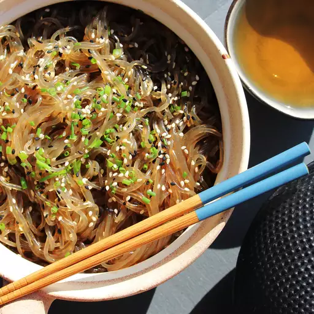

Home
Japchae (Korean Glass Noodles)

Description
Japchae, also known as chapchae (잡채), is a cherished staple of Korean cuisine and one of its most iconic dishes.
Celebrated for its unique flavors and vibrant appearance, it holds a special place on the table during festive occasions
such as New Year’s Day and the Harvest Festival. Its flavorful and versatile nature, however, also makes it a favorite for regular days.
Ingredients
- 1 (8 ounce) package sweet potato vermicelli (glass noodles)
- ½ cup boiling water
- ½ cup reduced-sodium soy sauce
- ¼ cup brown sugar
- 3 tablespoons vegetable oil
- 1 teaspoon toasted sesame seeds
Steps
- Break noodles into medium pieces. Place into a deep dish and cover with hot tap water. Soak for 10 minutes.
- Meanwhile, whisk boiling water, soy sauce, and brown sugar together in a 2-cup liquid measure.
- Drain noodles and transfer to a bowl. Pour soy mixture over top and soak for 2 minutes.
- Heat oil in a large skillet over medium heat. Add noodles and soy sauce mixture. Cook and stir until hot, about 5 minutes.
- Transfer noodles and sauce to serving bowls. Garnish with sesame seeds.